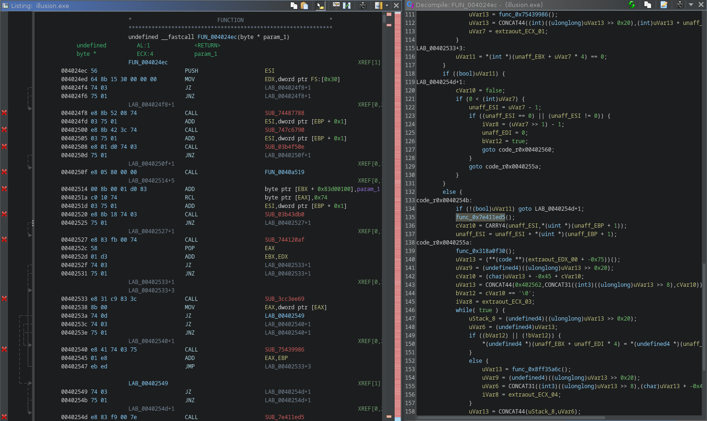
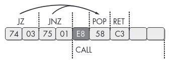
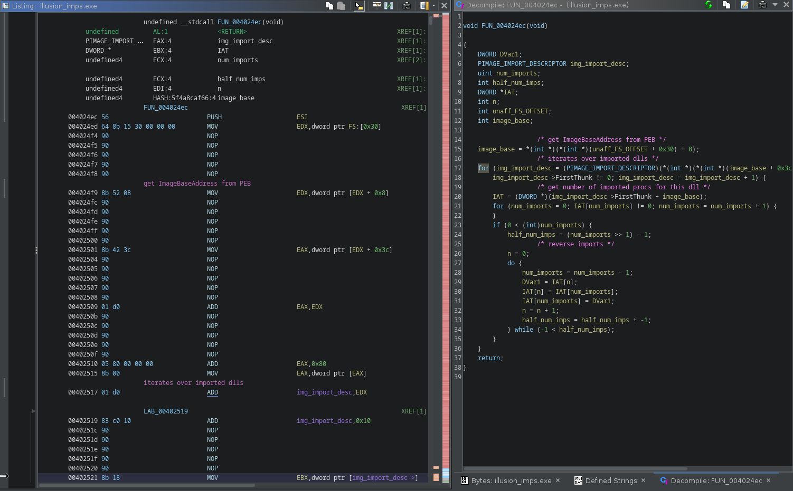
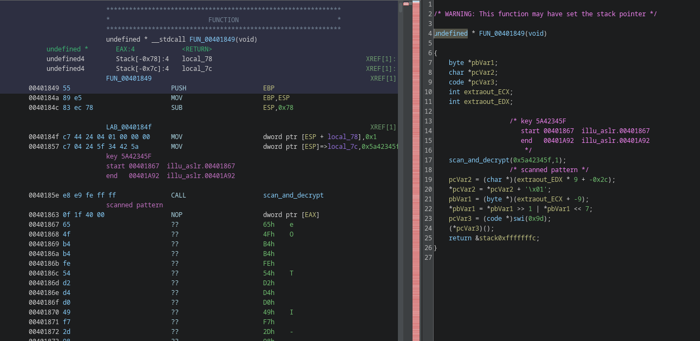
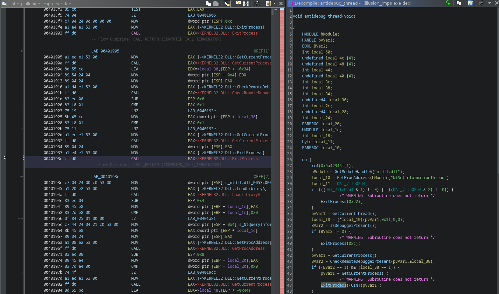
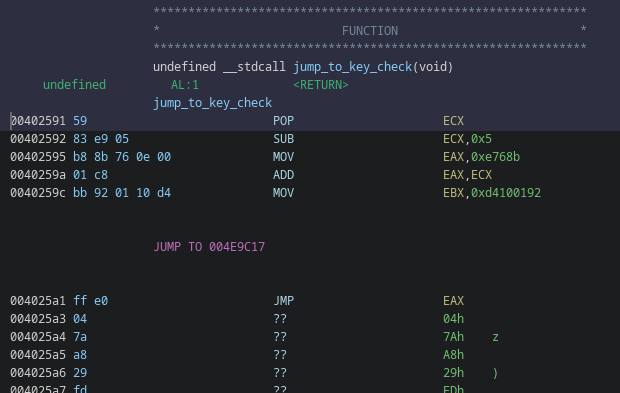
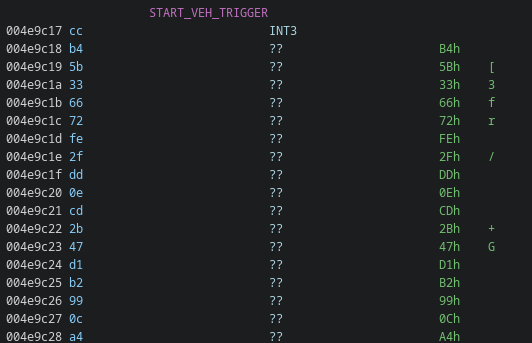

BarbHack CTF 2023 - illusion
BarbHack 2023 had some pretty cool reversing challenges. I could not attend the conf, so i solved them afterwards (not sure i would have time to solve this one during the CTF anyway).
This writeup is about illusion.exe, a fun binary by sar - thanks to him for providing it to me afterwards and allowing me to host it here :)
1. Clicky click
if we run the binary it just produces this output and exits:
C:\Users\me\Desktop>illusion.exe
Reading key...
2. Reversing
There’s a number of TLS callbacks defined. They will be executed before the entry point.
Ghidra automatically labels them as tls_callback_X and x64dbg will auto break on them by default.
We can see some odd stuff like a call to VirtualQuery that doesn’t make any sense:
void tls_callback_1(void)
{
if (DAT_0053d430 == 0) {
VirtualQuery(NULL,NULL,(SIZE_T)FUN_00401849);
DAT_0053d430 = 1;
}
return;
}
2.1 tls_callback_0
2.1.1 Anti Disassembly
The first TLS callback calls a function that doesn’t make much sense at first

It’s using a common obfuscation technique with JZ/JNZ to produce a non-conditionnal jump but still confuse the disassembler.
The method is well described in the great Practical Malware Analysis book, which i highly recommend everyone to read.

We can get rid of it by looking for the JZ +5; JNZ +3; CALL pattern and NOPing it:
dat = open("illusion.exe", "rb").read()
# nop the jz/jnz trick
dat = dat.replace(b'\x74\x03\x75\x01\xe8', b'\x90\x90\x90\x90\x90')
with open("illu_patched.exe", "wb") as fp:
fp.write(dat)
after running the patch and doing some retyping it becomes clear what this function is doing:

2.1.2 IAT Scrambling
It accesses the PEB via FS:[0x30], parses the PE header structures and reverses the IAT.
This explains why the VirtualQuery calls wasn’t making sense: because it’s not VirtualQuery.
The following script will statically reverse the IAT entries (sorry, CTF quality…)
import pefile
import shutil
from pwn import *
def get_string(fp, off):
out = b''
curr = fp.tell()
fp.seek(off)
for x in range(123):
out += fp.read(1)
if out[-1] == 0:
fp.seek(curr)
return out[:-1]
fp.seek(curr)
return b''
def apply_patches(data, patches):
for addr in sorted(patches.keys()):
fp.seek(addr)
fp.write(patches[addr])
pe = pefile.PE("illusion.exe")
patches = {}
with open("illusion.exe", "rb") as fp:
assert fp.read(2) == b'MZ'
fp.seek(0x3c)
nt = u32(fp.read(4))
fp.seek(nt + 0x80) # DIRECTORY_IMPORT
addr = pe.get_offset_from_rva(u32(fp.read(4)))
fp.seek(addr)
while True:
data = fp.read(4*5)
# end of import dir
if data == b'\x00'*20:
break
img_import_desc = struct.unpack('IIIII', data)
name_off = pe.get_offset_from_rva(img_import_desc[3])
name = get_string(fp, name_off)
print(name)
# save current offset
dir_offset = fp.tell()
imps = []
imp_offset = pe.get_offset_from_rva(img_import_desc[0])
fp.seek(imp_offset)
while True:
i = fp.read(4)
if i == b'\x00\x00\x00\x00':
break
imps.append(i)
# reverse shit
imps = b''.join(imps[::-1])
patches[imp_offset] = imps
fp.seek(dir_offset)
shutil.copyfile("illu_patched.exe", "illusion_imps.exe")
with open("illusion_imps.exe", "br+") as fp:
apply_patches(fp, patches)
Before patching:
% emit illu_patched.exe | pemeta -I -t | grep KERNEL32
Imports.KERNEL32[0x00] : WideCharToMultiByte
Imports.KERNEL32[0x01] : VirtualQuery
Imports.KERNEL32[0x02] : VirtualProtect
Imports.KERNEL32[0x03] : TlsGetValue
Imports.KERNEL32[0x04] : Sleep
Imports.KERNEL32[0x05] : SetUnhandledExceptionFilter
Imports.KERNEL32[0x06] : MultiByteToWideChar
Imports.KERNEL32[0x07] : LoadLibraryA
Imports.KERNEL32[0x08] : LeaveCriticalSection
Imports.KERNEL32[0x09] : IsDebuggerPresent
Imports.KERNEL32[0x0A] : IsDBCSLeadByteEx
Imports.KERNEL32[0x0B] : InitializeCriticalSection
Imports.KERNEL32[0x0C] : GetStartupInfoA
Imports.KERNEL32[0x0D] : GetProcAddress
Imports.KERNEL32[0x0E] : GetModuleHandleW
Imports.KERNEL32[0x0F] : GetModuleHandleA
Imports.KERNEL32[0x10] : GetModuleFileNameA
Imports.KERNEL32[0x11] : GetLastError
Imports.KERNEL32[0x12] : GetFileSize
Imports.KERNEL32[0x13] : GetCurrentThread
Imports.KERNEL32[0x14] : GetCurrentProcess
Imports.KERNEL32[0x15] : FlushInstructionCache
Imports.KERNEL32[0x16] : ExitProcess
Imports.KERNEL32[0x17] : EnterCriticalSection
Imports.KERNEL32[0x18] : DeleteCriticalSection
Imports.KERNEL32[0x19] : CreateThread
Imports.KERNEL32[0x1A] : CheckRemoteDebuggerPresent
after patching:
% emit illusion_imps.exe | pemeta -I -t | grep KERNEL32
Imports.KERNEL32[0x00] : CheckRemoteDebuggerPresent
Imports.KERNEL32[0x01] : CreateThread
Imports.KERNEL32[0x02] : DeleteCriticalSection
Imports.KERNEL32[0x03] : EnterCriticalSection
Imports.KERNEL32[0x04] : ExitProcess
Imports.KERNEL32[0x05] : FlushInstructionCache
Imports.KERNEL32[0x06] : GetCurrentProcess
Imports.KERNEL32[0x07] : GetCurrentThread
Imports.KERNEL32[0x08] : GetFileSize
Imports.KERNEL32[0x09] : GetLastError
Imports.KERNEL32[0x0A] : GetModuleFileNameA
Imports.KERNEL32[0x0B] : GetModuleHandleA
Imports.KERNEL32[0x0C] : GetModuleHandleW
Imports.KERNEL32[0x0D] : GetProcAddress
Imports.KERNEL32[0x0E] : GetStartupInfoA
Imports.KERNEL32[0x0F] : InitializeCriticalSection
Imports.KERNEL32[0x10] : IsDBCSLeadByteEx
Imports.KERNEL32[0x11] : IsDebuggerPresent
Imports.KERNEL32[0x12] : LeaveCriticalSection
Imports.KERNEL32[0x13] : LoadLibraryA
Imports.KERNEL32[0x14] : MultiByteToWideChar
Imports.KERNEL32[0x15] : SetUnhandledExceptionFilter
Imports.KERNEL32[0x16] : Sleep
Imports.KERNEL32[0x17] : TlsGetValue
Imports.KERNEL32[0x18] : VirtualProtect
Imports.KERNEL32[0x19] : VirtualQuery
Imports.KERNEL32[0x1A] : WideCharToMultiByte
(btw: use binref, it’s cool)
If we go back to the tls_callback_1, we can see that the call to VirtualQuery is in fact a call to CreateThread, which makes much more sense:
void tls_callback_1(void)
{
if (DAT_0053d430 == 0) {
CreateThread(NULL,0,FUN_00401849,NULL,0,NULL);
DAT_0053d430 = 1;
}
return;
}
2.2 tls_callback_1
Diving into the next callback, and following the thread entry point, we end up into another mess:

there’s call to a function that ends up doing some crypto, followed by a 4 bytes nop marker:
0f 1f 40 00 NOP dword ptr [EAX]
the function will look for 2 of the above 0f 1f 40 00 markers and do some RC4 on the data in-between using the key provided as parameter:
void __cdecl scan_and_decrypt(undefined4 sort_of_key,int increment)
{
bool bVar1;
bool bVar2;
char *pcVar3;
char *end_scan;
char *start_scan_addr;
char *end_addr;
char *start_addr;
start_scan_addr = (char *)get_return_addr_from_func();
bVar1 = false;
bVar2 = false;
/* scan for
scanned pattern
00401863 0f 1f 40 00 NOP dword ptr [EAX]
*/
while (pcVar3 = start_addr, end_scan = start_addr, !bVar1) {
if ((((*start_scan_addr == 0xf) && (start_scan_addr[1] == 0x1f)) && (start_scan_addr[2] == 0x40)) &&
(start_scan_addr[3] == 0x0)) {
bVar1 = true;
start_addr = start_scan_addr;
}
start_scan_addr = start_scan_addr + increment;
}
while (end_scan = end_scan + increment, !bVar2) {
if (((*end_scan == 0xf) && (end_scan[1] == 0x1f)) && ((end_scan[2] == 0x40 && (end_scan[3] == 0x0)))) {
bVar2 = true;
end_addr = end_scan;
}
}
if (increment == -1) {
start_addr = end_addr;
end_addr = pcVar3;
}
// decrypt code in place between the 2 markers
decrypt(sort_of_key,(BYTE *)(start_addr + 4),(int)end_addr);
return;
}
The decryption is done using standard crypto API and the actual RC4 key is derived from the md5 hash of the provided key, nothing fancy.
void __cdecl decrypt(undefined4 key,BYTE *start_address,int end_address)
{
BOOL r;
HANDLE hProcess;
DWORD local_24;
DWORD old_prots;
DWORD size;
HCRYPTHASH phHash;
HCRYPTKEY phKey;
HCRYPTPROV hProv;
size = end_address - (int)start_address;
VirtualProtect(start_address,end_address - (int)start_address,0x40,&old_prots);
r = CryptAcquireContextA(&hProv,NULL,NULL,1,CRYPT_VERIFYCONTEXT);
if (r == 0) {
ExitProcess(1000);
}
r = CryptCreateHash(hProv,CALG_MD5,0,0,&phHash);
if (r == 0) {
ExitProcess(0x3e9);
}
r = CryptHashData(phHash,(BYTE *)&key,4,0);
if (r == 0) {
ExitProcess(0x3ea);
}
r = CryptDeriveKey(hProv,CALG_RC4,phHash,0x280011,&phKey);
if (r == 0) {
ExitProcess(0x3eb);
}
r = CryptEncrypt(phKey,0,1,0,start_address,&size,end_address - (int)start_address);
if (r == 0) {
ExitProcess(0x3ec);
}
VirtualProtect(start_address,end_address - (int)start_address,old_prots,&local_24);
hProcess = GetCurrentProcess();
FlushInstructionCache(hProcess,NULL,0);
return;
}
We can use the following script to statically perform decryption:
import sys
import hashlib
from Crypto.Cipher import ARC4
scan_pattern = b'\x0f\x1f\x40\x00'
def find_pattern(data, pat):
offsets = []
off = 0
while True:
off = data.find(pat, off+1)
if off == -1:
break
offsets.append(off)
return offsets
def decrypt(data, start, end):
bla = data[start - 12:start - 12 + 7]
# 00401857 c7 04 24 5f 34 42 5a MOV dword ptr [ESP]=>local_7c,0x5a42345f
assert bla[:3] == b'\xc7\x04\x24'
key = bla[3:]
enc = data[start+4:end]
h = hashlib.md5(key).digest()
# CryptDeriveKey w/ 0x280011 only uses the 5 first bytes
# https://elis531989.medium.com/dissecting-and-automating-hancitors-config-extraction-1a6ed85d99b8
c = ARC4.new(key=h[:5])
return c.decrypt(enc)
data = bytearray(open(sys.argv[1], 'rb').read())
off = find_pattern(data, scan_pattern)
off = [off[n:n+2] for n in range(0, len(off), 2)]
for start, end in off:
print("decrypt 0x%x -> 0x%x"%(start, end))
dec = decrypt(data, start, end)
for n, c in enumerate(dec):
data[start+4+n] = c
with open(sys.argv[1] + '.dec', 'wb') as fp:
fp.write(data)
After patching, we can see the thread is running an anti debug loop:

2.3 main meat
now we can safely go the main function and find out what’s up with that key:
undefined4 FUN_0040248b(void)
{
time_t tVar1;
FUN_00533900();
rc4(0x172431ff,1); // decrypt
tVar1 = FUN_0040155c(NULL);
srand((uint)tVar1);
FUN_0040244d();
rc4(0x172431ff,-1); // encrypt back
return 0;
}
we can descend the call stack, several functions down, all between encrypt/decrypt calls until we reach something like that:
uint FUN_0040214E(void)
{
rc4(0x499aadb1,1);
/*
* SNIP
*/
Sleep(0x40);
pHVar3 = GetModuleHandleA(NULL);
iVar4 = read_key_from_registry(&KEY);
set_trap_handler_and_check_key();
/*
* SNIP
*/
rc4(0x499aadb1,-1);
return DVar9 + ((int)(((int)&pHVar7->unused +
iVar8 + ((int)(((int)(((int)&pHVar6->unused +
cx_frame_size +
((int)(((int)((DVar5 + ((int)(((int)(pHVar3 + ((int)((DVar2 + ((int)(pHVar1 +
0xc214400) >> 4 ^ 0xdeadbeefU) ^ 0xcafebabe) << 0xc) >> 4 ^
0x14530451U) * 0x400) >> 4 ^ 0x14530451U) << 0xc) >> 4) + iVar4 ^
0x14530451) << 0xc) >> 4 ^ 0x14530451U) << 0xc) >> 4) ^
0x14530451U) << 0xc) >> 4 ^ 0x14530451U) << 0xc) >> 4 ^ 0xdeadbeefU) ^ 0xcafebabe
) << 0xc) >> 4) ^ 0x14530451;
}
The read_key_from_registry will read the the key from the registry in
HKCU\Software\Microsoft\Windows\illusion\Run\hell_on_earth
The set_trap_handler_and_check_key will check the key…
3. Key Check
To perform the key check, an exception handler is setup:
undefined4 set_trap_handler_and_check_key(void)
{
rc4(0x8820afda,1);
SetUnhandledExceptionFilter(unhandled_exception_filter);
jump_to_key_check();
rc4(0x8820afda,-1);
return 0;
}
this exception handler is quite simple:
undefined4 unhandled_exception_filter(EXCEPTION_POINTERS *except_ptr)
{
byte *exception_address;
char key_entry;
rc4(0x994a4b42,1);
exception_address = (byte *)except_ptr->ExceptionRecord->ExceptionAddress;
/* reencrypt previous block */
if (((PREV_START_ADDR != NULL) && (PREV_END_ADDR != NULL)) && (PREV_RC4_KEY != 0)) {
rc4_again(PREV_RC4_KEY,PREV_START_ADDR,(int)PREV_END_ADDR);
}
/* INT3 */
if (*exception_address == 0xcc) {
/* read key char */
key_entry = (&KEY)[INDEX];
/* Key must only be A B C D characters */
if (((key_entry != 'A') && (key_entry != 'B')) && ((key_entry != 'C' && (key_entry != 'D')))) {
ExitProcess(0x29b);
}
INDEX = INDEX + 1;
/* jump back to decrypted block, offset depends on key char:
A = 0
B = 0xe
C = 0x1c
D = 0x2a */
except_ptr->ContextRecord->Eip = except_ptr->ContextRecord->Eip + (key_entry + -0x41) * 0xe + 1;
/* decrypt block of size 0x38 bytes using the RC4 with key from EBX reg */
rc4_again(except_ptr->ContextRecord->Ebx,exception_address + 1,(int)(exception_address + 0x39));
/* save for reencryption when reaching next block */
PREV_START_ADDR = exception_address + 1;
PREV_END_ADDR = exception_address + 0x39;
PREV_RC4_KEY = except_ptr->ContextRecord->Ebx;
rc4(0x994a4b42,-1);
return 0xffffffff;
}
/* HLT */
if (*exception_address == 0xf4) {
/* decrypt flag using the key and print it */
give_flag();
ExitProcess(999);
}
ExitProcess(0x29a);
}
it is setup to handle INT3 (0xcc) and HLT (0xf4) instructions.
When handling an HLT instruction, it will print the flag (decrypting it using the key)
When handling an INT3 instruction, it will:
- read the RC4 key from the exception context’s EBX register
- use it to decrypt 0x38 bytes of code after the crash location
- read the next character from the registry key (which must only be A B C or D) and use it to jump into the freshly decrypted code.
- ‘A’ will jump at offset 0x00
- ‘B’ will jump at offset 0x0e
- ‘C’ will jump at offset 0x1c
- ‘D’ will jump at offset 0x2a
After setting up this handler, it sets a value into EBX, computes some jump location and go for it:

the jump location starts with a INT3, which nicely fits what could read from the exception handler:

We can use unicorn to emulate and see what happens, at least for the first “block”:
0x40259a add eax, ecx
0x40259c mov ebx, 0xd4100192
0x4025a1 jmp eax
0x4e9c17 int3
###############
# HANDLER CC
###############
key = 0xd4100192
b'\xcd\x03\xcd\x03\xcd\x03\xcd\x03\xcd\x03\xcd\x03\xcd\x03\xb8K0\x06\x00\x01\xc8\xbbR\x9a\xb1\xb9\xff\xe0\xb8X\x03\x0b\x00\x01\xc8\xbb\xf9\x18\xc8\x91\xff\xe0\xb8\xdc\x9c\x02\x00\x01\xc8\xbb}\x01U\xa3\xff\xe0'
0x4e9c18 int 3 ; offset key 'A'
0x4e9c1a int 3
0x4e9c1c int 3
0x4e9c1e int 3
0x4e9c20 int 3
0x4e9c22 int 3
0x4e9c24 int 3
0x4e9c26 mov eax, 0x6304b ; offset key 'B'
0x4e9c2b add eax, ecx
0x4e9c2d mov ebx, 0xb9b19a52
0x4e9c32 jmp eax
0x4e9c34 mov eax, 0xb0358 ; offset key 'C'
0x4e9c39 add eax, ecx
0x4e9c3b mov ebx, 0x91c818f9
0x4e9c40 jmp eax
0x4e9c42 mov eax, 0x29cdc ; offset key 'D'
0x4e9c47 add eax, ecx
0x4e9c49 mov ebx, 0xa355017d
0x4e9c4e jmp eax
using key B
new eip: 0x4e9c26
0x4e9c26 mov eax, 0x6304b
0x4e9c2b add eax, ecx
0x4e9c2d mov ebx, 0xb9b19a52
0x4e9c32 jmp eax
0x4655d7 int3
###############
# HANDLER CC
###############
key = 0xb9b19a52
b")\x0cZ\x86s\x10\x0c\xfd\x8e\xfbxar\xd0?\x86\xe4M\x15\x8cA,|\xf5\xb8`\x1c=\xe7;q&'\x17\xcaS\x88i\xa4\x10\xfaU\x92P\x1a\x91}|\xce\xe6+\x80[\xd9\xd0\x92"
0x4655d8 sub dword ptr [edx + ebx*2], ecx
0x4655db xchg byte ptr [ebx + 0x10], dh
0x4655de or al, 0xfd
The first decrypted block clearly offers 4 choices.
- The first path is obviously invalid because it’s just
int. - The 3 other ones, will set a new key in
EBXand compute a new jump location.
If we take the ‘B’ path and follow it, we end up to another CC instruction, but the decrypted content doesn’t make sense: the path is invalid.
If we take the ‘C’ path, we end up in another 4 choices block:
// snip
using key C
new eip: 0x4e9c34
0x4e9c34 mov eax, 0xb0358
0x4e9c39 add eax, ecx
0x4e9c3b mov ebx, 0x91c818f9
0x4e9c40 jmp eax
0x4b28e4 int3
###############
# HANDLER CC
###############
key = 0x91c818f9
b'\xb8\x8bv\x0e\x00\x01\xc8\xbb\x92\x01\x10\xd4\xff\xe0\xb8\xba\xa2\x05\x00\x01\xc8\xbb=\xf6\x86\xa6\xff\xe0\xb8X\x81\x08\x00\x01\xc8\xbb\x93\xb4}\xd8\xff\xe0\xb8\xf3\x9a\x0c\x00\x01\xc8\xbb\xd9\xd0\x16\x1d\xff\xe0'
0x4b28e5 mov eax, 0xe768b
0x4b28ea add eax, ecx
0x4b28ec mov ebx, 0xd4100192
0x4b28f1 jmp eax
0x4b28f3 mov eax, 0x5a2ba
0x4b28f8 add eax, ecx
0x4b28fa mov ebx, 0xa686f63d
0x4b28ff jmp eax
0x4b2901 mov eax, 0x88158
0x4b2906 add eax, ecx
0x4b2908 mov ebx, 0xd87db493
0x4b290d jmp eax
0x4b290f mov eax, 0xc9af3
0x4b2914 add eax, ecx
0x4b2916 mov ebx, 0x1d16d0d9
0x4b291b jmp eax
We’re in a maze: in each decrypted block is a room, in each room we can go in direction A B C or D and sometimes we reach deadends.
The exit of the maze is when we find the HLT instruction.
4. Solving The Maze
I used unicorn to emulate the code and solve the maze recursively. It’s not pretty but it works and the script is available here.
It recursively checks all paths/keys and produces a trace.
For some reason it’s not able to stop when it reaches the HLT instruction, so i had to dig into the trace (instead of fixing the issue :^))
% python emu4.py > trace
% grep -B6 hlt trace
trying key C
DESCEND
>> 0x4e8828 mov eax, 0x12170a
>> 0x4e882d add eax, ecx
>> 0x4e882f mov ebx, 0x13241a9b
>> 0x4e8834 jmp eax
>> 0x523c96 hlt
% grep -P "trying C|hlt" trace | grep -B1 hlt
trying CDDCDDDCCCCCDDDCDDDCCDDCCDDDCCDDDDCCCDDCCBBCCBBBCCCBBCCCCCCCCBCCCCCDDDDAAAADDDDDDCDDDDDDDCDCDDDADDDCCDDDCCCDDDDCCCCCCCDCD
>> 0x523c96 hlt
so the key should be CDDCDDDCCCCCDDDCDDDCCDDCCDDDCCDDDDCCCDDCCBBCCBBBCCCBBCCCCCCCCBCCCCCDDDDAAAADDDDDDCDDDDDDDCDCDDDADDDCCDDDCCCDDDDCCCCCCCDCDC
We can create the registry entry:
Windows Registry Editor Version 5.00
[HKEY_CURRENT_USER\SOFTWARE\Microsoft\Windows\illusion\Run]
"hell_on_earth"="CDDCDDDCCCCCDDDCDDDCCDDCCDDDCCDDDDCCCDDCCBBCCBBBCCCBBCCCCCCCCBCCCCCDDDDAAAADDDDDDCDDDDDDDCDCDDDADDDCCDDDCCCDDDDCCCCCCCDCDC"
and try it:
C:\Users\me\Desktop>illusion.exe
Reading key...
Congratz!! brb{Im_having_illusions_all_this_confusion_is_driving_me_mad_inside}